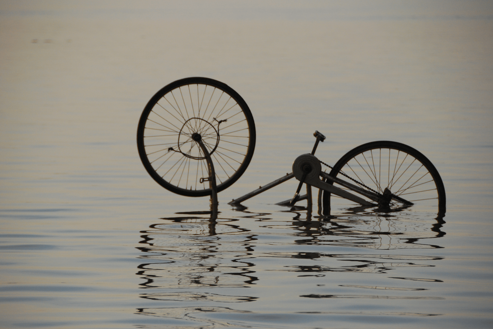

Publications

This page is being slowly updated. It has a list of pre-2021 articles and a few links. Try google scholar for now for links and more recent stuff, or my old wordpress page for unlocked pdfs of non-OA articles
Amaël Borzée, Jeffrey McNeely, Kit Magellan, Jennifer RB Miller, Lindsay Porter, Trishna Dutta, Krishnakumar P Kadinjappalli, Sandeep Sharma, Ghazala Shahabuddin, Fikty Aprilinayati, Gerard E Ryan, Alice Hughes, Aini Hasanah Abd Mutalib, Ahmad Zafir Abdul Wahab, Damber Bista, Suchana Apple Chavanich, Ju Lian Chong, George A Gale, Hanyeh Ghaffari, Yadav Ghimirey, Vijaya Kumaran Jayaraj, Ambika Prasad Khatiwada, Monsoon Khatiwada, Murali Krishna, Ngwe Lwin, Prakash Kumar Paudel, Chinara Sadykova, Tommaso Savini, Bharat Babu Shrestha, Colin T Strine, Makamas Sutthacheep, Ee Phin Wong, Thamasak Yeemin, Natasha Zulaika Zahirudin, Li Zhang (2020). COVID-19 Highlights the Need for More Effective Wildlife Trade Legislation. Trends in Ecology and Evolution. 35: 1052–1055 pdf
Brownell RL Jr, Reeves RR, Read AJ, Smith BD, Thomas PO, Ralls K, Amano M, Berggren P, Chit AM, Collins T, Currey R, Dolar L, Genov T, Hobbs R, Kreb D, Marsh H, Zhigang M, Perrin WF, Phay S, Rojas-Bracho L, Ryan GE, Shelden KEW, Slooten E, Taylor BL, Vidal O, Ding W, Whitty TS, & Wang JY (2019). Bycatch in gillnet fisheries threatens Critically Endangered small cetaceans and many others. Endangered Species Research 40: 285–296
Thomas, PO, Gulland, FMD, Reeves, RR, Kreb, D, Ding, W, Smith, B, Malik, MI, Ryan, GE, & Phay, S (2019). A review of electrofishing as a potential threat to freshwater cetaceans. Endangered Species Research 39:207-220
Ryan, GE, Nicholson, E, Eames, JC, Gray, TNE, Loveridge, R, Mahood, SP, Sum P, & McCarthy, MA (2019) Simultaneous‐count models to estimate abundance from counts of unmarked individuals with imperfect detection. Conservation Biology 33(3): 697–708
Ryan, GE, & Baker, CM (2019). Corrigendum to “A general method for assessing the risks and benefits of secrecy in conserving ’Lazarus species” [Biol. Cons. 203, 186–187]. Biological Conservation 230: 47
Loveridge, R, Ryan, GE, Sum P, Grey-Read, O, Mahood, SP, Mould, A, Harrison, S, Crouthers, R, Ko, S., Clements, T, Eames, JC, & Pruvot, M. (2018). Poisoning causing the decline in South-East Asia’s largest vulture population. Bird Conservation International 29(1): 41–54
Krutzen, M, Beasley I, Ackermann, CY, Lieckfeldt, D, Ludwig, A, Ryan GE, Bejder, L, Parra, GJ, Wolfensberger, R, & Spencer, PBS(2018). Demographic collapse and low genetic diversity of the Irrawaddy dolphin population inhabiting the Mekong River. PLoS ONE 13(1): e0189200
Brownell, RL, Reeves, RR, Thomas, PO, Smith, BD, & Ryan, GE (2017). Dams threaten rare Mekong dolphins. Science 355(6327): 805
Mustika, PLK, Welters, R, Ryan, GE, D’Lima, C, Sorongon-Yap, P, Jutapruet S, & Peter, C (2017). A rapid assessment of wildlife tourism risk posed to cetaceans in Asia. Journal of Sustainable Tourism 25(8): 1138–115
Ryan, GE, & Baker, CM (2016). A general method for assessing the risks and benefits of secrecy in conserving ‘Lazarus species’. Biological Conservation 203: 186–187. See also Corrigendum, Ryan & Baker (2019)
Singh, R. Phan C, Prum S, Pin C, Ryan, G, & Wright, M (2013). The Serengeti of Asia: current status of the Eastern Plains Landscape protected area complex, Cambodia. PARKS 19(2): 23-32
Ryan, GE (2012) Brahminy kites Haliastur indus fishing with Irrawaddy dolphins Orcaella brevirostris in the Mekong River. Forktail 28: 161-162
Sok K, Claassen, AH, Wright, HL, & Ryan, GE (2012) Waterbird nest protection on the Mekong River: a preliminary evaluation, with notes on the recovery and release of white-shouldered ibis Pseudibis davisoni chicks. Cambodian Journal of Natural History 2012(1): 29-41
McCarthy, MA, Garrard, GE, Moore, AL, Parris, KM, Regan, TJ, & Ryan, GE (2011) The SAFE index should not be used for prioritization. Frontiers in Ecology and the Environment 9(9): 486–487
Ryan, GE, Dove, V, Trujillo, F, & Doherty, PF (2011) Irrawaddy dolphin demography in the Mekong River: an application of mark-resight models. Ecosphere 2(5): art58
Select Grey Literature:
Nick Golding, Freya M. Shearer, Robert Moss, Peter Dawson, Dennis Liu, Joshua V. Ross, Rob Hyndman, Pablo Montero-Manso, Gerry Ryan, Tobin South, Jodie McVernon, David J. Price, and James M. McCaw, (2021). Situational assessment of COVID-19 in Australia Technical Report 15 March 2021 (released 28 May 2021)
GE Ryan, (2021). Birds in the sky, fish in the sea, money in the bank: quantitative methods for more effective conservation. Thesis submitted in total fulfilment for the degree of Doctor of Philosophy, The University of Melbourne.
Beasley, IL, & Ryan GE (2017) Assessing the impacts on Mekong River Irrawaddy dolphins from the Sambor hydropower alternatives. Chapter 9, Volume 2: Sambor Dam Alternatives, Sambor Hydropower Dam Alternatives Assessment: Final Report. Executive Summary. Technical Report.
Ryan, GE, Mustika PL, & Welters, R (2016). Tourism puts dolphins at risk in Southeast Asia – here’s what to look for on your next holiday. The Conversation
Ryan, Gerard Edward (2014). The Don Sahong Dam and the Mekong Dolphin. World Wide Fund for Nature, Gland, Switzerland
Cowling, V, & Ryan, G (2014). Can trans-boundary management save the dolphins in Lao PDR? Catch & Culture: Fisheries Research and Development in the Mekong Region 19:2 4–5
Ryan, GE (2013). Rhino horn and tiger blood: conservation in the Mekong. The Conversation
Ryan, Gerard Edward (2013) Is the extirpation of Irrawaddy dolphins Orcaella brevirostris in Laos imminent: an assessment of status and recommendations for conservation. SC/65a/SM05. Presented to the International Whaling Commission Scientific Committee, June 2013
Ryan, GE (2012) Last chance for dolphins in Laos: A review of the history, threats, and status. A Technical Report from WWF-Greater Mekong Programme, Hanoi, Vietnam
Rodgers, M, Nash, E, Blate, G, Congdon, G, & Ryan, GE (2012) Resilience on the Mekong: A vulnerability and adaptation assessment in North-East Cambodia. WWF-Cambodia Technical Report, WWF-Cambodia, Phnom Penh, Cambodia